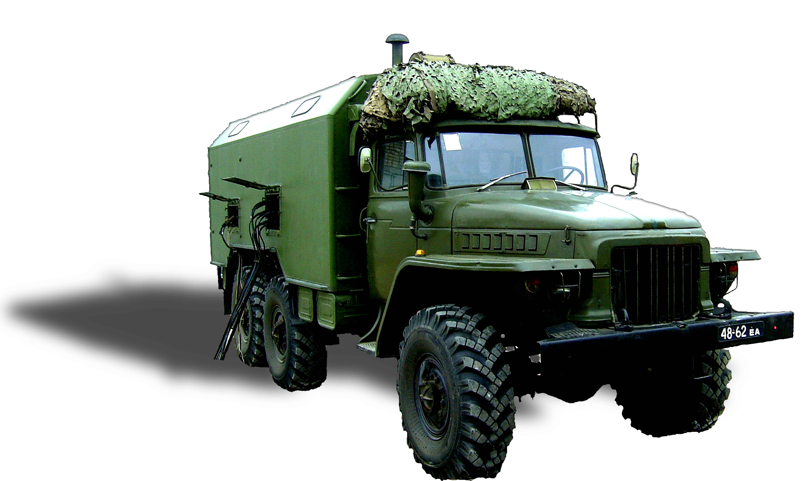

Тема №5. Устройство и эксплуатация цифровых систем телекоммуникаций.
Занятие №12. Аппаратные цифровых систем телекоммуникаций.
1. Назначение, состав, технические данные и структурная схема аппаратной П-178МБ.
Подвижная автоматическая телефонная станция П-178МБ предназначена для организации цифровых проводных линий связи и развертывания абонентской сети автоматической телефонной и громкоговорящей связи на полевых пунктах управления Вооруженных Сил в стратегическом и оперативном звеньях управления.
П-178МБ состоит из современного аппаратного комплекса и программного обеспечения, предназначенного как для автоматической, так и ручной коммутации аналоговых и цифровых абонентских и соединительных линий.
П-178МБ обеспечивает работу в единой межгарнизонной автоматической телефонной сети Вооруженных Сил предоставляя абоненту услуги высокого качества и надежности.
П-178МБ обеспечивает надежную работу при температуре окружающего воздуха от минус 40 до плюс 50ºС и относительной влажности воздуха 98% при температуре 25 ºС.
Электропитание:
- промышленная сеть 3х380 В, 50 Гц;
- аккумуляторные батареи (в течение 1 часа).
Потребляемая мощность:
- телекоммуникационным оборудованием – 1,8 кВт;
- кондиционером – 4,3 кВт;
- суммарная – 6,1 кВт.
Основной режим работы изделия - на стоянке.
Режим работы – непрерывный, круглосуточный.
П-178МБ принята на вооружение Вооруженных Сил Республики Беларусь 20 октября 2010 года.
П-178 МБ обеспечивает:
Функционирование автоматизированного рабочего места оператора управления станцией и двух АРМ телефониста, оборудованных защищенными ПЭВМ и соответствующим программным обеспечением.
Развертывание четырех направлений цифровых проводных линий связи с использованием кабеля П-296, из которых два с раздельными и два с объединенными трактами приема и передачи.
Развертывание на пункте управления абонентской телефонной сети емкостью:
- 30 цифровых абонентских линий;
- 140 аналоговых абонентских линий;
- 60 аналоговых абонентских линий (через системы абонентского уплотнения Ф4/12);
- 4 абонентских линий технического персонала.
Развертывание сети громкоговорящей связи емкостью до 30 абонентов.
Сопряжение с полевыми (подвижными) и стационарными комплексами связи по соединительным линиям:
- 12 цифровых каналов Е1 с обеспечением сигнализации R1,5, 1ВСК, 2ВСК, ОКС-7 и EDSS1;
- 12 аналоговых каналов ТЧ в режиме 4-х проводного окончания с вызывной частотой 2100 Гц;
- 12 аналоговых каналов ТЧ в режиме 2-х проводного окончания с индукторным вызовом от 40 до 80 В;
- 10 аналоговых двухпроводных линий в режиме подключения номера внешней АТС.
Документирование в динамическом режиме информации, передаваемой по любым 2-м цифровым каналам Е1, 12-ти аналоговым двухпроводным линиям и 12-ти каналам ТЧ (С1-ТЧ) с 4-х проводным окончанием.
Состав основного оборудования П-178МБ:
| № п/п | Наименование | Кол-во |
|---|---|---|
| 1 | АТСЭ ФММ | 1 |
| 2 | Цифровая система передачи Мегатранс–3М | 2 |
| 3 | Аппаратура цифровых систем передачи ЦМ-Е1 | 2 |
| 4 | Аппаратура абонентского уплотнения Ф4/12 | 5 |
| 5 | Оборудование громкоговорящей связи (ОГО) | 1 |
| 6 | АРМ администратора (телефониста) | 1 |
| 7 | АРМ телефониста | 2 |
| 8 | Статив мобильный климатический МКД3 | 1 |
| 9 | Статив коммутации СКМ | 1 |
| 10 | Статив ЗИП | 2 |
| 11 | Анализатор первичного сетевого стыка АFK3 | 1 |
| 12 | Анализатор каналов тональной частоты ТЧ-ПРО | 1 |
| 13 | Блок БПСЖ-М | 1 |
| 14 | Блок БКРЗ | 1 |
| 15 | Система электропитания ПС 60/48У | 1 |
| 16 | Инвертор Штиль PS 60/700 C-P-1 | 1 |
| 17 | Кондиционер 1К22 | 1 |
2. Назначение, состав, технические данные и структурная схема аппаратной П-257-60КМБ.
Назначение П-257-60КМБ
Аппаратная каналообразования П-257-60КМБ предназначена для строительства магистральных цифровых линий связи, а также линий привязки полевых узлов связи к полевой опорной сети связи Вооруженных Сил и к сети электросвязи общего пользования, с обеспечением аналоговыми и цифровыми каналами связи узлов связи подвижных пунктов управления Вооруженных Сил в оперативном, оперативно-стратегическом и стратегическом звеньях управления.
Благодаря применению перспективных телекоммуникационных технологий и современной элементной базы в аппаратной реализованы как функции коммутации каналов, так и функции коммутации пакетов для предоставления перспективных услуг связи "Triple Play" (голос, видео, данные), что обеспечивает широкие эксплуатационные возможности. Средства связи аппаратной способны коммутировать любой тип трафика, обеспечивают маршрутизацию в сетях IP/Ethernet и полностью совместимы с сетью электросвязи общего пользования и сетями специального назначения.
Имеющийся набор абонентских интерфейсов полностью удовлетворяет потребности пунктов управления различных звеньев управления Вооруженных Сил (прямые абоненты, 2/4 пр. КТЧ, ОЦК, ТЛГ, С1-И, FXO, FXS, RS-232, Ethernet) и обеспечивает сопряжение с аналоговыми каналами связи.
Технические характеристики аппаратной П-257-60КМБ:
Внутреннее оборудование аппаратной обеспечивает:
- функционирование двух автоматизированных рабочих мест операторов управления, оборудованных защищенными ПЭВМ и соответствующим программным обеспечением;
- формирование четырех линейных оптических интерфейсов уровня STM-1 со 100% аппаратным резервированием по оптическому одномодовому кабелю или формирование восьми линейных оптических интерфейсов уровня STM-1 без аппаратного резервирования;
- организацию трех цифровых систем передачи со скоростью передачи основного цифрового потока 2048 кбит/с и Ethernet 10/100 BaseT по кабелю П-296М c раздельными трактами приема/передачи и длиной регенерационного участка до 25 км;
- организацию трех цифровых систем передачи с возможностью передачи до двух потоков Е1 и Ethernet 10/100BaseT по кабелю П-296М с объединенными трактами приема/передачи и протяженностью до 10 км;
- организацию восьми SDSL цифровых систем передачи со скоростью передачи основного цифрового потока 2048 кбит/с по кабелю П-274М с объединенными трактами приема/передачи и протяженностью до 5 км;
- формирования 96 цифровых потоков Е1;
- мультиплексирование/демультиплексирование образованных цифровых потоков Е1 в абонентские интерфейсы емкостью:
- 5 каналов стыка С1-И;
- 6 каналов ТЧ в 2-х проводном окончании с индукторным вызовом (МБ);
- 16 двухпроводных линии в режиме проключения номеров АТС удаленным абонентам (FXO);
- 12 двухпроводных линий в режиме приема номеров удаленной АТС (FXS, ЦБ);
- 32 канала ТЧ в 4-х проводном окончании с вызывной частотой 2100 Гц;
- 48 телеграфных каналов С1-ТГ в шести направлениях;
- кросс-коммутацию на уровне канальных интервалов образованных потоков Е1;
- сопряжение 168 синхронных потоков Е1 из коммутаторов SDH (основного и резервного) в коммутатор абонентского доступа;
- полнодоступную неблокируемую коммутацию до 24 потоков VC-4 на уровне VC-4, VC-3, VC-12 со 100% аппаратным резервированием;
- конвертирование двух потоков Е1 в Ethernet 10/100BaseT и обратно;
- формирование 4 каналов Ethernet и передачу их в структуре сигнала STM-1 со скоростью до 86, 016 Мбит/с;
- формирование 2 направлений WAN для организации Ethernet трафика со скоростью до 2 Мбит/с;
- коммутацию трафика Ethernet с функциями маршрутизации;
- ручную и автоматическую коммутацию каналов и цифровых потоков связи с возможностью их вывода на кабельные вводы аппаратной;
- кросс-коммутацию оптических линий связи цифровых систем передачи с возможностью их вывода на кабельный ввод аппаратной;
- организацию служебной связи по внутриузловым соединительным линиям и образованным каналам связи;
- шнуровую коммутацию входов/выходов средств измерения (AFK-3, ПИТ-801, TDA-5);
- измерение основных параметров волоконно-оптических и кабельных линий связи, потоков Е1 и каналов тональной частоты;
- техническое сопряжение с аналоговыми и цифровыми каналами связи аппаратуры полевых узлов связи различной принадлежности, стационарных узлов связи пунктов управления Вооруженных Сил и сети электросвязи общего пользования.
Внешнее оборудование аппаратной обеспечивает:
синхронный мультиплексор доступа СМД:
- формирование четырех линейных оптических интерфейсов уровня STM-1 со 100% аппаратным резервированием по оптическому одномодовому кабелю или формирование восьми линейных оптических интерфейсов уровня STM-1 без аппаратного резервирования;
- полнодоступную неблокируемую коммутацию до 24 потоков VC-4 на уровне VC-4, VC-3, VC-12 со 100% аппаратным резервированием;
- формирование 4 каналов Ethernet и передачу их в структуре сигнала STM-1 со скоростью до 86, 016 Мбит/с;
- сопряжение 84 синхронных потоков Е1 из коммутаторов SDH (основного и резервного) в коммутатор абонентского доступа;
- коммутацию сигналов Е1 на уровне канальных интервалов;
- формирование 2 направлений WAN для организации Ethernet трафика со скоростью до 2 Мбит/с;
- формирование 8 окончаний FXO;
- формирование 12 4-х проводных каналов ТЧ;
- формирование 2 линейных интерфейсов SDSL;
цифровая система передачи ЦМ-Е1:
- организацию цифровой системы передачи с возможностью передачи до двух потоков Е1 и Ethernet 10/100BaseT по кабелю П-296М с объединенными трактами приема/передачи и протяженностью до 10 км.
П-257-60КМБ обеспечивает надежную работу при температуре окружающего воздуха от минус 40 до плюс 50ºС и относительной влажности воздуха 98% при температуре 25 ºС.
Электропитание:
- промышленная сеть 3х380 В, 50 Гц;
- аккумуляторные батареи (в течение 1 часа).
Потребляемая мощность: 3,0 кВт.
Основной режим работы изделия: на стоянке.
Режим работы: непрерывный, круглосуточный.
Экипаж: 4 человека.
Состав основного оборудования П-257-60КМБ
| № п/п | Наименование оборудования | Кол-во |
|---|---|---|
| 1 | Цифровая система передачи Мегатранс–3М (c АОКС) | 3 |
| 2 | Цифровая система передачи ЦМ-Е1 | 3 |
| 3 | Синхронный мультиплексор доступа СМД | 1 |
| 4 | Первичный мультиплексор МПЦ-с | 2 |
| 5 | Аппаратура IP маршрутизации NX-5124, V.1 управляемый L3 коммутатор | 1 |
| 6 | Аппаратура конвертации интерфейса RS-232 в Ethernet NPort 5610-16 сервер последовательных устройств | 1 |
| 7 | Конвертер интерфейсов E1/Eth FlexCON-Eth | 2 |
| 8 | Автоматизированное рабочее место оператора ПК 51 | 2 |
| 9 | Принтер лазерный | 1 |
| 10 | Автоматизированное рабочее место оператора (переносное), ноутбук ВМ2015 | 1 |
| 11 | Переговорно-вызывное устройство | 1 |
| 12 | Пульт служебной связи | 1 |
| 13 | Блок громкоговорящей связи БГС | 1 |
| 14 | Статив мобильный климатический МКД | 2 |
| 15 | Статив коммутации мобильный СКМ | 1 |
| 16 | Оптический кросс | 1 |
| 17 | Анализатор первичного сетевого стыка АFK3 | 1 |
| 18 | Прибор ПИТ-801 | 1 |
| 19 | Оптический тестер OT-2-8 | 1 |
| 20 | Прибор для измерения характеристик КТЧ TDA-5 | 1 |
| 21 | Прибор кабельный ИРК-ПРО | 1 |
| 22 | Устройство для проверки оптических линейных трактов по шлейфу | 1 |
| 23 | Система электропитания ПС-60/48 | 1 |
| 24 | Инвертор 48/220В | 1 |
| 25 | Волоконно-оптический кабель ОК-В-М | 300м. |
| 26 | ЗИП-О | 1 |
| 27 | Кондиционер | 1 |
| 28 | Цифровая система передачи ЦМ-Е1 (переносной комплект) | 1 |
| 29 | Синхронный мультиплексор доступа СМД (переносной комплект) | 1 |
| 30 | Регенератор для ЦСП Мегатранс–3М | 1 |
| 31 | Переносная навигационная система (ГЛОНАСС/GPS) | 1 |